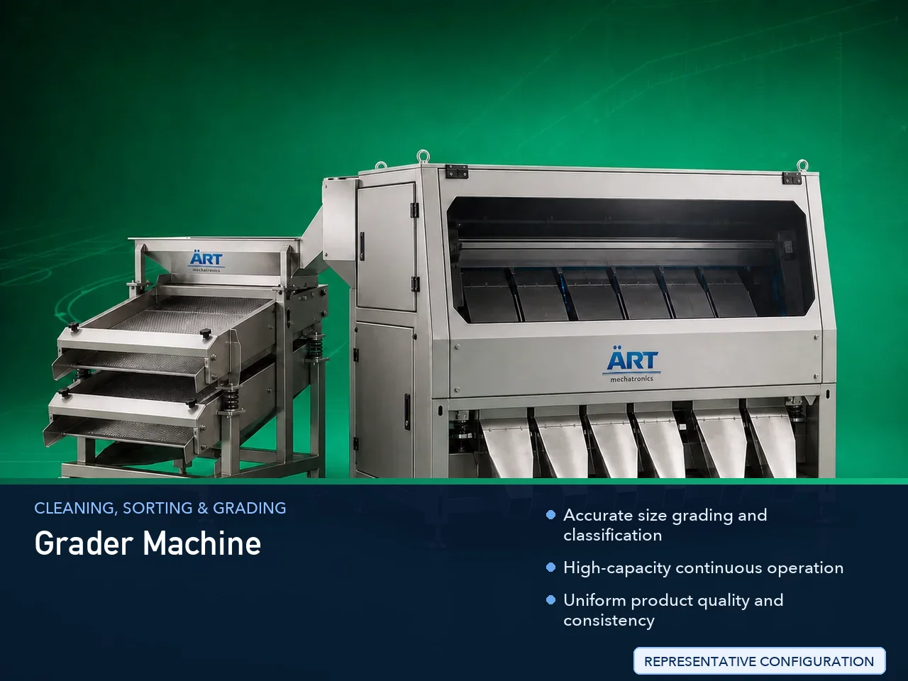

Grader Machine (Industrial Size Grading & Material Classification System)
A Grader Machine, also known as an Industrial Grading Machine, Size Grader, or Material Classification System, is an advanced industrial equipment designed for sorting, grading, and classifying grains, seeds, spices, pulses, powders, granules, nuts, and bulk materials based on size, shape, and…

About the Grader Machine
Grader machines are essential in industrial processing plants for improving: ✔ Product uniformity ✔ Product quality ✔ Market value ✔ Packaging consistency ✔ Processing efficiency
The machine operates using: ✔ Vibratory screening ✔ Rotary grading ✔ Mesh separation ✔ Size classification systems
to separate materials into multiple grades according to required specifications.
Grader machines are widely used in industries such as:
Food processing
Grain processing
Seed industries
Pulses processing
Spice industries
Nut processing
Agro products
Chemical industries
where accurate size classification and product consistency are critical.
The machine is suitable for: ✔ Grain grading ✔ Seed sizing ✔ Spice classification ✔ Pulse grading ✔ Nut sorting ✔ Powder classification
ART Mechatronics offers high-performance grader machines, engineered for accurate grading, continuous operation, hygienic processing, and reliable industrial performance.
Working Principle of Grader Machine
Grains, seeds, powders, nuts, granules, or bulk materials are fed into grading machine
Material moves across specially designed screens or grading surfaces Vibratory or rotary motion helps classify material by size
Enables accurate size-based separation
Smaller particles pass through fine mesh openings Larger particles remain on upper grading sections
Product flows continuously through grading system Ensures high-capacity industrial processing
Material separated into different size grades and categories
Each size grade discharged separately through dedicated outlets
Types of Grader Machines
- 1. Vibro Grader Machine
Uses: ✔ Vibratory motion ✔ Mesh-based grading for accurate particle classification.
- 2. Rotary Grader Machine
Uses rotating drum or cylindrical grading system for: ✔ Continuous grading applications
- 3. Multi Deck Grader Machine
Allows: ✔ Multi-size classification ✔ Simultaneous grading into multiple categories
- 4. Grain Grader Machine
Designed for: ✔ Wheat ✔ Rice ✔ Maize ✔ Agro product grading
- 5. Seed Grader Machine
Specially designed for: ✔ Seed sizing and sorting applications
- 6. Nut & Spice Grader Machine
Suitable for: ✔ Peanut grading ✔ Spice size classification ✔ Nut sorting operations
Industries Using Grader Machine
🌾 Grain Processing Industry Wheat, rice and maize grading 🌱 Seed Processing Industry Seed sizing and classification 🍃 Food Processing Industry Powder and granule grading 🌶️ Spice Industry Spice particle classification 🍚 Pulses Industry Dal and pulse grading 🥜 Nut Processing Industry Peanut and dry fruit grading ⚗️ Chemical Industry Powder particle size classification
Features & Advantages
✔ Accurate size grading and classification ✔ High-capacity continuous operation ✔ Uniform product quality and consistency ✔ Multi-stage grading capability ✔ Heavy-duty industrial construction ✔ Low maintenance requirement ✔ Energy-efficient operation ✔ Hygienic and easy-to-clean design ✔ Suitable for multiple material types
Technical Highlights
Grading Technology: Vibratory grading Rotary grading Mesh separation Deck Options: Single deck Double deck Multi deck Construction: Stainless Steel / Mild Steel Mesh Size: Customizable Capacity: Small to large industrial throughput Operation: Manual Semi-automatic Fully automatic
Turnkey Grading Solutions
ART Mechatronics offers: Complete grading and classification systems Multi-stage grading plants Dust collection integration Conveying and handling systems Installation & commissioning After-sales service & AMC
Why Choose Art Mechatronics
Expertise in industrial grading and classification systems Customized solutions for multiple industries High-performance and durable machine construction Energy-efficient and hygienic industrial designs Proven industrial performance across sectors
Applications
Grain Processing Plants Seed Processing Units Food Manufacturing Industries Spice Processing Facilities Pulse Processing Plants Nut Processing Industries
Industries that use the Grader Machine
Related Cleaning, Sorting & Grading machines
Get pricing & specs for the Grader Machine
Share the product, target capacity, current process and plant location. These details help our engineers discuss the right machine or line configuration.
One partner, from design to start-up
ART Mechatronics designs, manufactures, installs and commissions your Grader Machine solution with regional presence in India, UAE and Thailand.